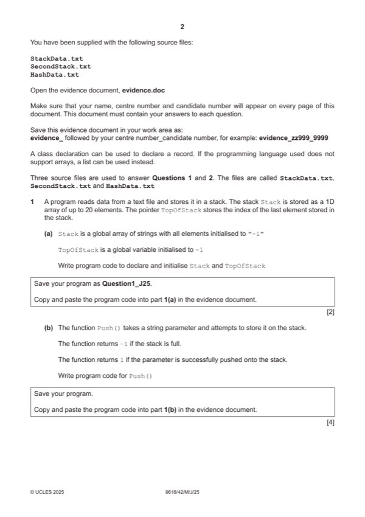

Question 1

Original paper page 2
Part 1(a) — solution
- (Global) Stack as 1D array (of strings) with 20 elements initialised to string "–1"
- (Global) TopOfStack initialised to –1
Visual Basic (VB.NET)
Dim Stack(19) As String
Dim TopOfStack As Integer
For x = 0 To 19
Stack(x) = "-1"
Next
TopOfStack = -1
Python
Stack = []
TopOfStack = -1
#main
for x in range(20):
Stack.append("-1")
University Press & Assessment 2025 Page 7 of 45
9618/42 Cambridge International AS & A Level – Mark Scheme May/June 2025
Mark points
- (Global) Stack as 1D array (of strings) with 20 elements initialised to string "–1"
- (Global) TopOfStack initialised to –1
Part 1(b) — solution
- Push function header (and end where appropriate) taking one (string) parameter
- Checking if stack is full and returning integer –1
- (Otherwise) Incrementing TopOfStack
- Storing parameter in the incremented the stack at TopOfStack and returning integer 1
Visual Basic (VB.NET)
Function Push(ByVal Data)
If TopOfStack = 19 Then
Return -1
Else
TopOfStack = TopOfStack + 1
Stack(TopOfStack) = Data
Return 1
End If
End Function
University Press & Assessment 2025 Page 8 of 45
9618/42 Cambridge International AS & A Level – Mark Scheme May/June 2025
Python
def Push(Data):
global Stack
global TopOfStack
if TopOfStack == 19:
return -1
else:
TopOfStack += 1
Stack[TopOfStack] = Data
return 1
University Press & Assessment 2025 Page 9 of 45
9618/42 Cambridge International AS & A Level – Mark Scheme May/June 2025
Mark points
- Push function header (and end where appropriate) taking one (string) parameter
- Checking if stack is full and returning integer –1
- (Otherwise) Incrementing TopOfStack
- Storing parameter in the incremented the stack at TopOfStack and returning integer 1
Part 1(c) — solution
- Function header (and end where appropriate) and returning a value in all cases
- Checking if stack is empty and returning string "–1"
- (Otherwise) Decrementing TopOfStack
- Returning element in stack at TopOfStack before TopOfStack is decremented
Visual Basic (VB.NET)
Function Pop()
If TopOfStack = -1 Then
Pop = "-1"
Else
Pop = Stack(TopOfStack)
TopOfStack = TopOfStack - 1
End If
End Function
University Press & Assessment 2025 Page 10 of 45
9618/42 Cambridge International AS & A Level – Mark Scheme May/June 2025
Python
def Pop():
global Stack
global TopOfStack
if TopOfStack == -1:
return "-1"
else:
ReturnValue = Stack[TopOfStack]
TopOfStack -= 1
return ReturnValue
University Press & Assessment 2025 Page 11 of 45
9618/42 Cambridge International AS & A Level – Mark Scheme May/June 2025
Mark points
- Function header (and end where appropriate) and returning a value in all cases
- Checking if stack is empty and returning string "–1"
- (Otherwise) Decrementing TopOfStack
- Returning element in stack at TopOfStack before TopOfStack is decremented
Part 1(d) — solution
- Procedure header (and end where appropriate) taking one (string) parameter
- Opening the file with the filename parameter and closing the file in an appropriate place
- Looping through to end of file and reading in each line
- … calling Push() once with each read in value …
- … if any return value from Push() is integer –1 outputting "Stack full"
- Exception handling for opening and reading from file with appropriate catch and output
Visual Basic (VB.NET)
Sub ReadData(ByVal FileName As String)
Dim ReturnValue As String
Try
Dim FileReader As New System.IO.StreamReader(FileName)
While Not FileReader.EndOfStream
ReturnValue = Push(FileReader.ReadLine())
If ReturnValue = "-1" Then
Console.WriteLine("Stack full")
End If
End While
FileReader.Close()
Catch ex As Exception
Console.WriteLine("Cannot open file")
End Try
End Sub
Python
def ReadData(FileName):
global Stack
global TopOfStack
try:
File = open(FileName)
for Line in File:
ReturnValue = Push(Line.strip())
if ReturnValue == -1:
print("Stack full")
File.close()
except:
print("Cannot open file")
University Press & Assessment 2025 Page 13 of 45
9618/42 Cambridge International AS & A Level – Mark Scheme May/June 2025
Mark points
- Procedure header (and end where appropriate) taking one (string) parameter
- Opening the file with the filename parameter and closing the file in an appropriate place
- Looping through to end of file and reading in each line
- … calling Push() once with each read in value …
- … if any return value from Push() is integer –1 outputting "Stack full"
- Exception handling for opening and reading from file with appropriate catch and output
Part 1(e) — solution
- Calculate() function header (and end where appropriate)
- Looping until the stack is empty
- Calling Pop() repeatedly within loop and storing/using return value
- … working out if return value from Pop() call is an operator or a number / alternating between operator and number
- Select to determine if the operator is +, -, /, * or ^ and attempt the matching calculation
- … performing correct calculation using operator, number
- … updating total from previous loops and returning this final value
Visual Basic (VB.NET)
Function Calculate()
Dim Total As Integer = Pop()
Dim ReturnValue As String = ""
Dim LastOperator As String = ""
Dim OperatorFlag As Boolean = True
Dim TheData As Integer = 0
While (ReturnValue <> "-1")
ReturnValue = Pop()
Select Case OperatorFlag
Case False
TheData = ReturnValue
Select Case LastOperator
Case "+"
Total = Total + TheData
Case "-"
Total = Total - TheData
Case "*"
Total = Total * TheData
Case "/"
Total = Total / TheData
Case "^"
Total = Total ^ TheData
End Select
OperatorFlag = True
Case Else
LastOperator = ReturnValue
University Press & Assessment 2025 Page 15 of 45
9618/42 Cambridge International AS & A Level – Mark Scheme May/June 2025
OperatorFlag = False
End Select
End While
Return Total
End Function
Python
def Calculate():
global Stack
global TopOfStack
Total = Pop()
Total = int(Total)
Return = 0
LastOperator = ""
Operator = True
while(Return != "-1"):
Return = Pop()
if Operator == False:
Data = int(Return)
if LastOperator == "+":
Total = Total + Data
elif LastOperator == "-":
Total = Total - Data
elif LastOperator == "*":
Total = Total * Data
elif LastOperator == "/":
Total = Total / Data
elif LastOperator == "^":
Total = Total ** Data
Operator = True
else:
LastOperator = Return
Operator = False
return Total
University Press & Assessment 2025 Page 16 of 45
9618/42 Cambridge International AS & A Level – Mark Scheme May/June 2025
Mark points
- Calculate() function header (and end where appropriate)
- Looping until the stack is empty
- Calling Pop() repeatedly within loop and storing/using return value
- … working out if return value from Pop() call is an operator or a number / alternating between operator and number
- Select to determine if the operator is +, -, /, * or ^ and attempt the matching calculation
- … performing correct calculation using operator, number
- … updating total from previous loops and returning this final value
Part 1(f)(i) — solution
- Taking a filename as input and calling ReadData() with input
- Calling Calculate() and outputting the return value
Visual Basic (VB.NET)
Console.WriteLine("Enter the filename")
Dim FileName As String = Console.ReadLine()
ReadData(FileName)
Dim ReturnValue As Single
ReturnValue = Calculate()
Console.WriteLine(ReturnValue)
Python
FileName = input("Enter the filename: ")
ReadData(FileName)
ReturnValue = Calculate()
print(ReturnValue)
University Press & Assessment 2025 Page 17 of 45
9618/42 Cambridge International AS & A Level – Mark Scheme May/June 2025
Mark points
- Taking a filename as input and calling ReadData() with input
- Calling Calculate() and outputting the return value
Part 1(f)(ii) — solution
1 mark for screenshot showing input of StackData.txt and output of 131 2
Mark points
- Include the ideas shown in the solution above.
Part 1 — solution
mark for screenshot showing input of SecondStack.txt and output of 320
e.g.
University Press & Assessment 2025 Page 18 of 45
9618/42 Cambridge International AS & A Level – Mark Scheme May/June 2025
Mark points
- Include the ideas shown in the solution above.